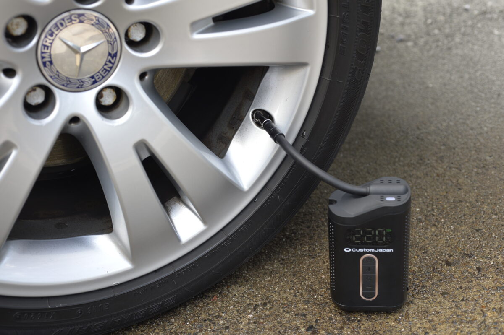
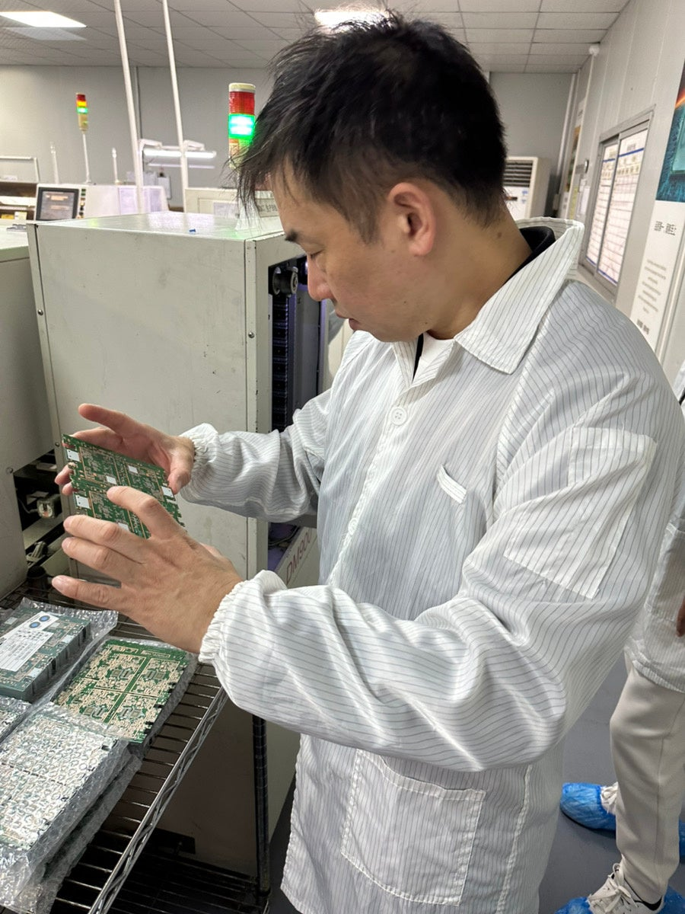

Our Philosophy
Smart Series は、カスタムジャパンが自ら企画・開発・製造・販売まで手がける、ライダーのためのスマートプロダクト・シリーズ。その原点にあるのは、日々現場から届く「こんなのが欲しかった」という、たったひとつの声です。

01 — Origin
2005年、大阪・日本橋で創業したカスタムジャパン。SHAD・TIMSUN の日本総代理店として国内外の名品を扱いながら、全国のバイク販売店の90％以上が会員という大規模な流通ネットワークを築いてきました。
その最前線には、毎日たくさんの「こんなのが欲しい」「もっとこうだったら」という声が集まります。既製品では応えきれないその声に、自分たちの手で応える——それが、自社開発のプライベートブランドの始まりでした。

02 — Philosophy
「ノル人をツクる」——これは、カスタムジャパンが独自開発する全プロダクトに通底するコンセプトです。Smart Series は、その思想をライダーの"日常の道具"へと広げる試み。
企画・開発・製造・販売までを自社で一貫して行うから、中間コストを削り、品質に投資できる。だから機能を削らずに、「驚き価格で、安心品質」を実現できるのです。
Our Promise
必要な機能は、すべて。価格は、手の届くところに。
妥協しないための、一貫体制です。
03 — Expansion
バイク用スマートモニター「スマートライドダッシュボード」を皮切りに、Smart Series は広がり続けています。差すだけでスマホ連携するカーリンク、目標圧まで自動充填するエアーポンプ、どこでも使える高圧洗浄機、そしてあらゆる場面で活躍するエアダスターへ。走る前も、走ったあとも。ライダーの毎日を、賢く。
Company
会社概要